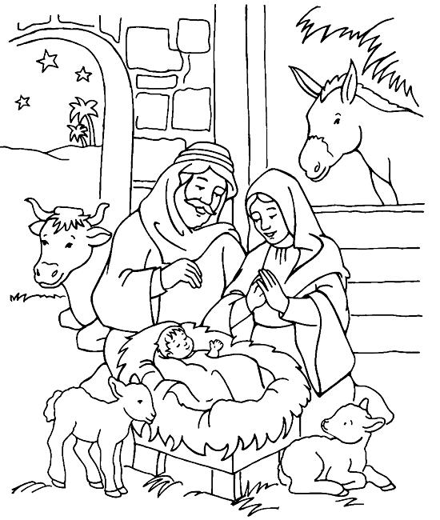

Read the lessons at the Vanderbilt Library website: http://divinity.lib.vanderbilt.edu/lectionary/aAdvent/aadvent4.htm
Elementary School Pew-work
S P A U R W C Q W F M
|
(Matthew 1:24-25) When Joseph awoke from sleep, he did as the angel of the Lord commanded him; he took her as his wife, {25} but had no marital relations with her until she had borne a son; and he named him Jesus. (NRSV) |
Word List |
from www.geocities.com/lectionarypuzzles/ free to distribute for free with this notice. Words are in a straight line left to right or top to bottom |
||
1. Whose family did Joseph belong to?
_____________________________________________________________
2. Even though they were engaged, did Joseph plan to marry Mary?
_____________________________________________________________
2. Why did Joseph decide to marry Mary after all?
_____________________________________________________________
3. What did the angel tell Joseph to name the baby?
_____________________________________________________________
4. What did Joseph name the baby?
_____________________________________________________________
